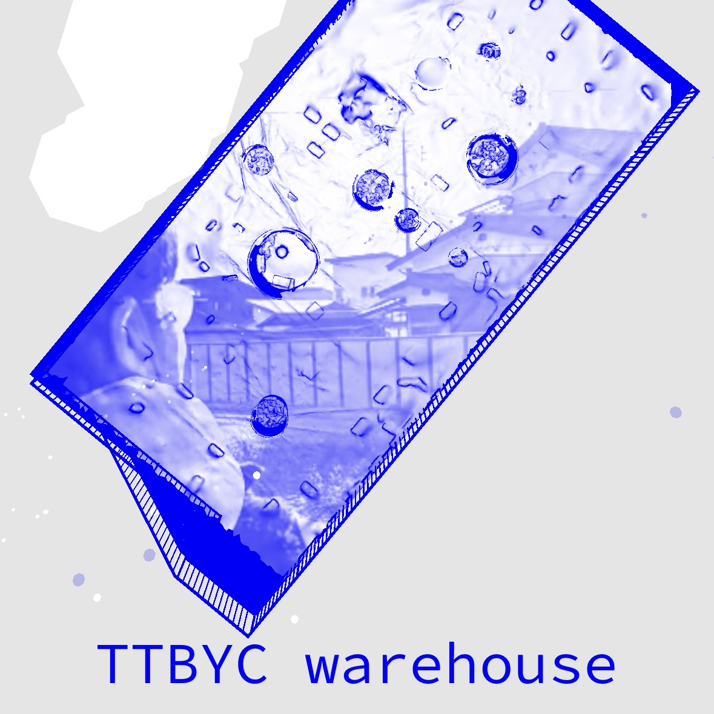
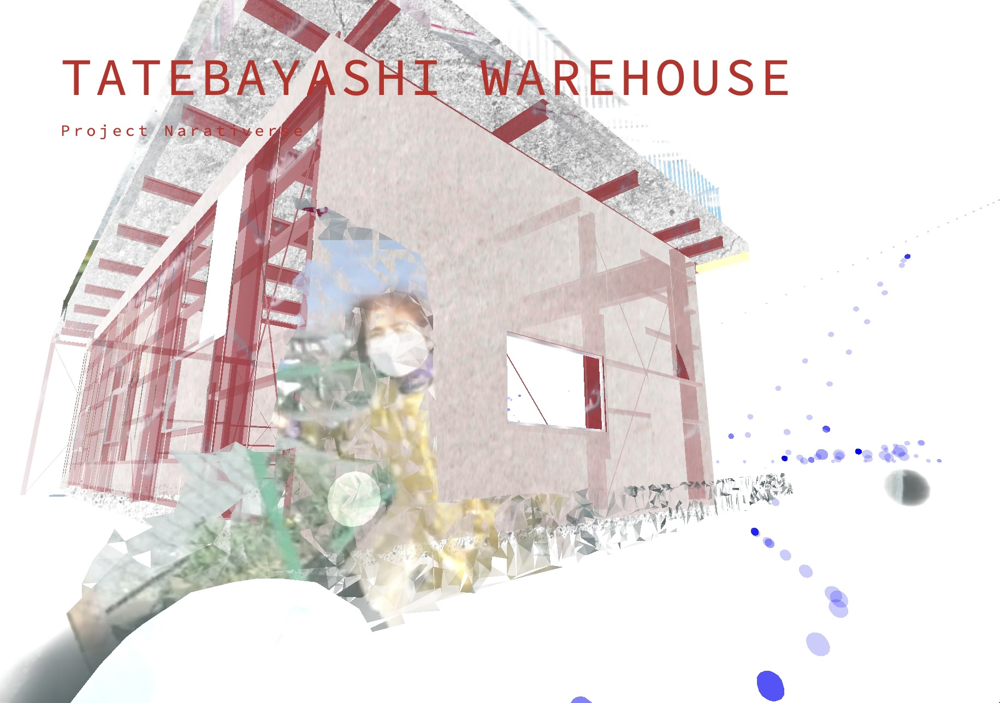
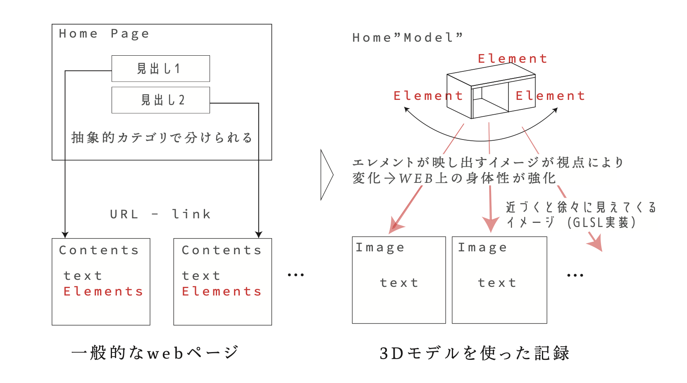
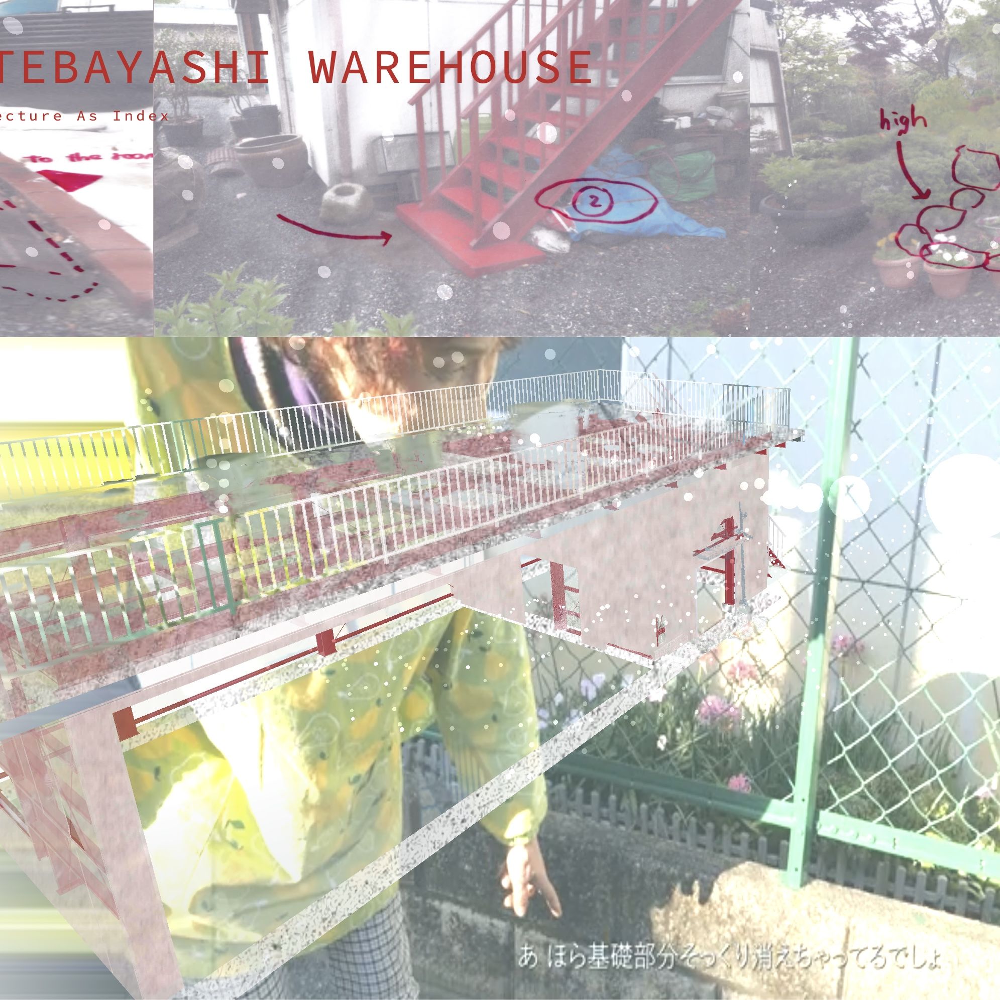

Project Narativerse

ナラティバースは、建築を単なる物質としての建物ではなく、そこに結びつく記憶や使われ方、人々の語りを含んだ「物質と情報の総体」として捉え直すためのウェブメディアである。
建築自身の存在や取り巻いてきた情報を、可視化・発信するメディアの設計と、実際の建築の設計とを同じ地平で扱うことで、建築体験そのものを拡張することを目指す提案である。
Narativerse is a web medium that reconsiders architecture not simply as a physical building, but as a totality of matter and information that includes the memories, uses, and stories connected to it. By treating the design of media that visualizes and communicates architectural information on the same plane as the design of architecture itself, the project seeks to layer informational value onto material value and expand the experience of architecture.

最初の対象としたのは、区画整理が予定されていた地域に残る、築30年の農業用倉庫である。建築の形状と属性を統合して扱うBIMの考え方や、データを開かれた形式で共有するOpenBIMの可能性を手がかりに、小さな建築を取り巻く環境や記憶を、オブジェクトごとに読み解き、記録・公開する方法を考えた。
The project focuses on a 30-year-old agricultural warehouse in an area scheduled for land readjustment. Drawing on BIM, which integrates a building’s form and attributes, and on the potential of OpenBIM to share data in open formats, it explores how the environment and memories surrounding a small building can be interpreted, recorded, and made public through its individual objects.

How Narativerse works
倉庫を構成する要素を中心にインタビューを行い、そこで得られた語りを、オブジェクトと結びついたナラティブとしてウェブ上に再構成している。サイトに遷移すると、建物の3Dモデルが現れる。各要素にはインタビュー映像がテクスチャとして埋め込まれており、空間を回遊しながら気になる要素に体当たりすると、そのテクスチャがクローズアップされ、映像を閲覧できる。建築を眺めるだけでなく、近づき、触れ、語りに出会うための記録の形を試みた。
Interviews were conducted around the elements that make up the warehouse, and the resulting stories were reconstructed online as narratives connected to each object. On entering the website, visitors encounter a 3D model of the building. Interview videos are embedded as textures on its individual elements. As visitors move through the space and collide with an element that catches their attention, its texture is brought into close-up, allowing the corresponding video to be viewed. Rather than simply looking at architecture, the project explores a form of record that invites visitors to approach it, touch it, and encounter its stories.
下記ボタンをクリックすると体験ページに遷移します。


🖥️